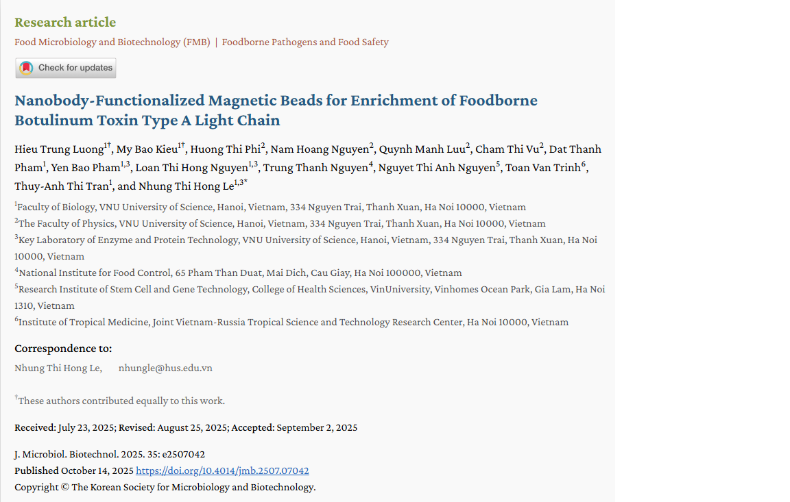

Featured

Journal of Microbiology and Biotechnology
2025
Nanobody-Functionalized Magnetic Beads for Enrichment of Foodborne Botulinum Toxin Type A Light Chain
For the first time, nanobody conjugated beads were developed to enrich botulinum serotype A. We evaluated two types of nanobody A8-functionalized magnetic beads, both of which effectively captured and enriched BoNT/A from dilute solutions and complex protein mixtures, achieving a concentration increase of approximately 12- to 30-fold.
DOI: 10.4014/jmb.2507.07042
PMID: 41084210
Status: Published